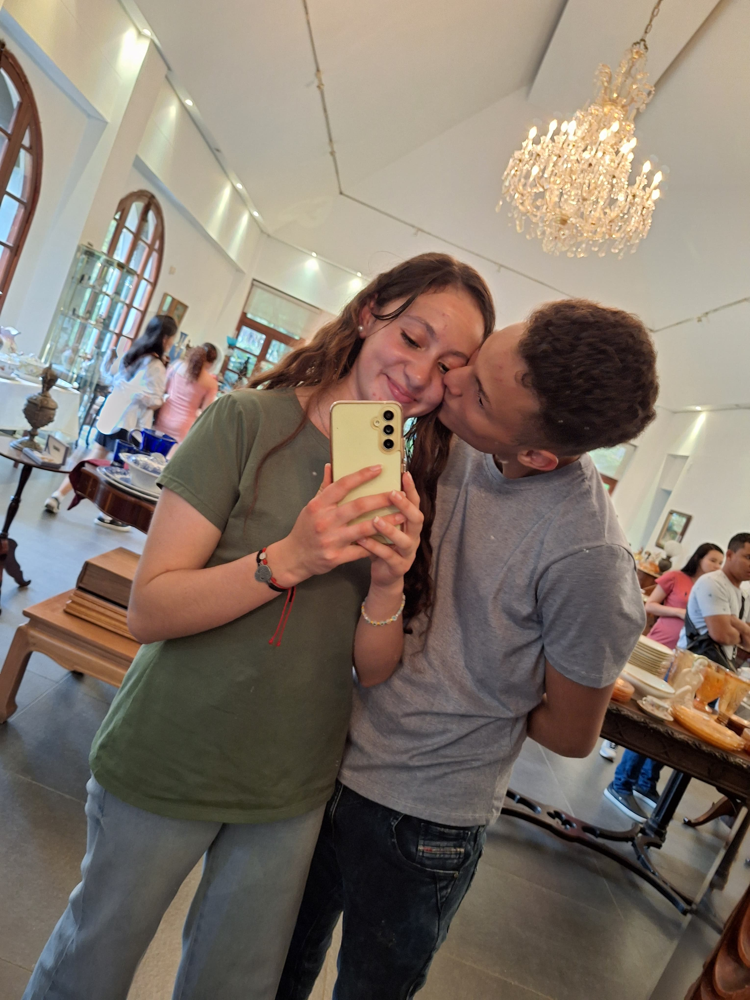
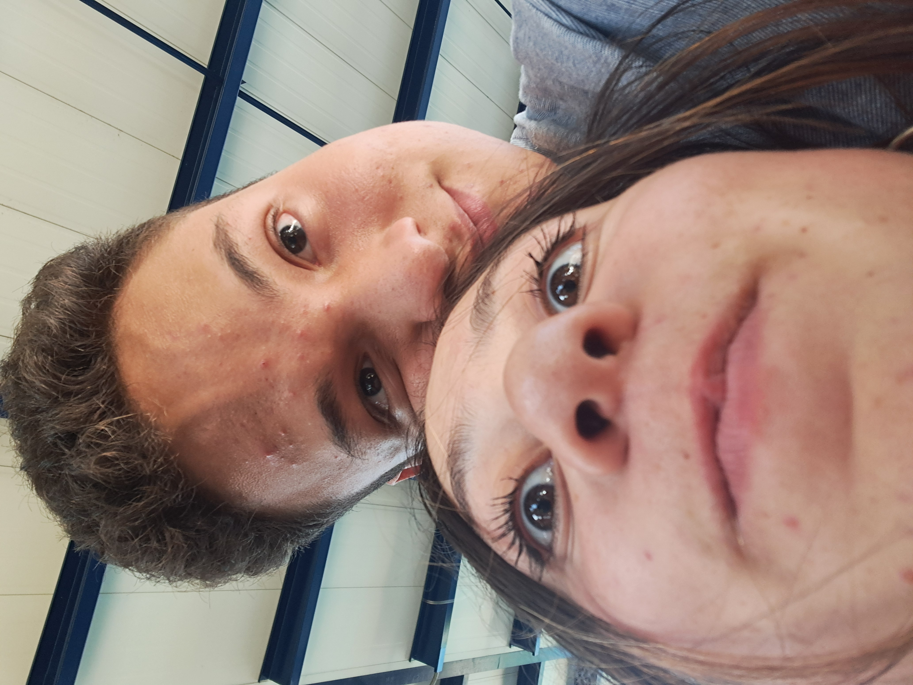

<- Simplemente tu, cada cosa que haces me hace amarte cada vez mas
Tu forma de caminar
Tu paciencia
Tu valentia
Tus abrazos
Tus besos
Tus caricias
Tu forma de amarme
Tus cuidados
Eres dulce
Eres mi motivacion
Tu picardia
Tu belleza natural
La fe que me tienes
La manera en la que me miras
La admiracion que me tienes
Tu humildad
Tu lado jugueton
Tu pasion por las cosas que amas
Tus defectos
Tus ganas de mejorar
Tu seriedad
Tu madures
Me haces mejorar cada dia
Tu aroma
Me haces sentir en paz
Me haces sentir seguro
Eres Talentosa
Eres mi niña mimada
Eres mi mundo entero
Eres adorable
A tu lado me siento importante
Eres inspiracion para mi
Eres generosa
Las veces que me demuestras tu amor
Los pequeños momentos que hemos pasado juntos
Los momentos en silencio que me dan paz
La tranquilidadd que me transmite tu mirada
Tu cuerpo
Tus manos
Tu presencia en mi vida
Cada cosa que haces me hace sentir orgulloso
Esos besos apasionados
No necesitas maquillaje para verte radiante
Tu risa contagiosa
Tu cuello delicado que me encanta besar
Tus mejillas sonrojadas que tanto me gusta acariciar
Tu cintura encantadora que tanto me tienta
Las conversaciones profundas
Las risas
Los juegos que nos hacen sentir como niños
Contigo no me importa quien nos este viendo
Cada dia contigo es una nueva aventura
Los mensajes de amor que me das
Todos los sentimientos que despiertas en mi
Los recuerdos que hemos creado juntos
Desde que llegaste me enseñaste lo que es el amor verdadero
Contigo he vivido una historia de amor de pelicula
Las llamadas siempre que se pueden
Tu apoyo incondicional en mis proyectos personales
Tu deseo por construir una vida juntos
Eres mi mejor amiga
Eres mi apoyo
Eres mi inspiracion
Tu forma de demostrarme que soy necesario en tu vida
Tu optimismo
Tu especialidad en hacerme sentir valorado
Tus ganas de superarte cada dia
Tu empatia
Tu capacidad para perdonar mis errores
Tu capacidad para escucharme y no juzgarme
La expresividad de tus ojos
Las veces que me demuestras cuanto me amas de manera inesperada
Tus mensajes de buenos dias
Tus mensajes de buenas noches
Tus recordatorios de que me amas
Me haces sentir cada dia qu eestas dispuesta a todo conmigo
Tus ganas de probar cosas nuevas conmigo
No puedo imaginar mi vida sin ti
la forma en la que se nos dieron las cosas


"Si tuviera que vivir mi vida de nuevo, a tu lado la viviría."
- Gabriel García Márquez
Luego de que llegaste a mi vida, fue cuando entendí el verdadero significado de esta frase.
Contigo he sentido cosas que jamás había sentido con nadie más; tú me hiciste descubrir lo que de verdad es el amor,
y lo sé cuando tenemos esos momentos de silencio que, para muchos, podrían ser incómodos, pero para nosotros no.
Sé que es amor verdadero cuando veo tus ojos y la manera en que me miran, tan pura y tan real;
en ese precioso instante es cuando me doy cuenta de que estoy con la mujer indicada. "La mujer indicada",
ese título te queda perfecto, porque, a pesar de los fallos que todos tenemos, eres una mujer dedicada, leal,
hermosa, inteligente, lo tienes todo, hecha a la medida para encajar conmigo. Jamás me esperé que llegaras a mi vida,
y al fin y al cabo, eso es lo mágico de todo esto, que no tuve que buscarte, que nada fue forzado, todo sucedió como tenía que serlo,
y esto se consolidó como una historia de amor hermosa en la cual nos quedan por escribir muchos capítulos.